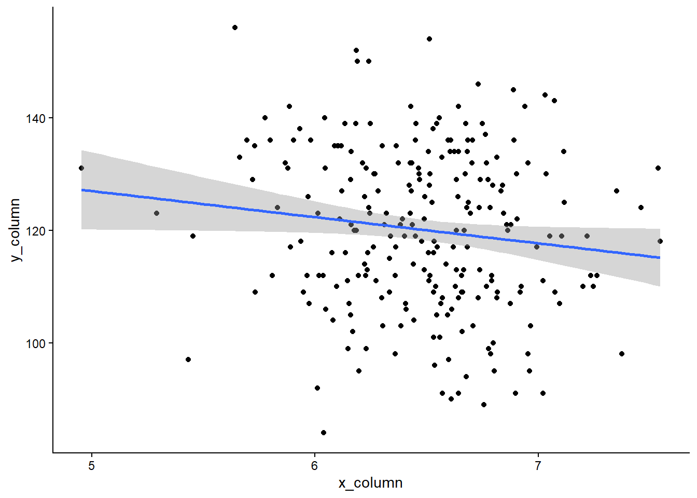

add_numbers <- function(x, y) {
z <- x + y
return(z)
}4.5: Writing Functions
Functions
Learning Outcomes
- Students will be able to explain what a function is and identify its arguments, body, and return value.
- Students will be able to write a custom function that performs a simple task.
- Students will be able to explain why functions are useful and how they connect to repeating a task.
Introduction
In this lesson, we’ll learn how to write functions in R. Functions let you automate tasks and reuse code across your entire dataset.
Let’s get started!
What is a function?
We’ve actually been using functions quite a lot in the course already, but let’s remind ourselves exactly what a function actually is.
A function is a block of code designed to perform a specific task. A function is executed when it is called. This means that the block of code is run every time you use the function!
A function takes specific arguments as input, processes them, and returns the output.

We’ve used a lot of built-in functions already, for example, the mean() function.
Now, we are going to write our own functions!
Writing Our First Function
Following the syntax from the image above, let’s write a function called add_numbers that takes two numbers as arguments and returns their sum.
Notice that we didn’t put any actual numbers in the function! Instead, we used generic arguments (e.g., x and y) to represent the values that will fill those slots when we call the function.
Inside the function body, we write a statement that adds x and y together and saves that value as an object called z.
We use the return() function to indicate that z is the value we want the add_numbers function to give back to us when it is executed.
Let’s test our function with numbers, now!
add_numbers(5, 5)[1] 10my_sum <- add_numbers(10, 10)
my_sum[1] 20Let’s Practice
Now try to write a function called multiply_numbers that takes three numbers as arguments and returns the product.
Make sure to test your function, and remember a function should have a name, a list of arguments, and return something. Use the same syntax as our add_numbers() example above.
# Write your code hereAnswer:
multiply_numbers <- function(x, y, z) {
product <- x * y * z
return(product)
}
multiply_numbers(1, 3, 3)[1] 9Why write our own functions?
We just wrote add_numbers, but R can already add with +. So why bother writing functions at all?
Once a task is wrapped in a function, you can run it on new inputs again and again without rewriting the code, and you can apply it across an entire column of data in one line.
Think back to how mutate() applied a calculation to every row of a data frame: a function lets you package up any task you want and hand it to tools like mutate() to repeat across all your data.
Functions That Work on Data
For the rest of the lesson, we’ll write functions that operate on a data frame. Let’s load the tidyverse and our hairgrass data first.
# Write your code hereAnswer:
library(tidyverse)── Attaching core tidyverse packages ──────────────────────── tidyverse 2.0.0 ──
✔ dplyr 1.2.1 ✔ readr 2.2.0
✔ forcats 1.0.1 ✔ stringr 1.6.0
✔ ggplot2 4.0.3 ✔ tibble 3.3.1
✔ lubridate 1.9.5 ✔ tidyr 1.3.2
✔ purrr 1.2.2
── Conflicts ────────────────────────────────────────── tidyverse_conflicts() ──
✖ dplyr::filter() masks stats::filter()
✖ dplyr::lag() masks stats::lag()
ℹ Use the conflicted package (<http://conflicted.r-lib.org/>) to force all conflicts to become errorshairgrass <- read_csv("data/hairgrass_data.csv")Rows: 240 Columns: 8
── Column specification ────────────────────────────────────────────────────────
Delimiter: ","
dbl (8): hairgrass_density, soil_nitrogen, soil_phosphorus, penguin_density,...
ℹ Use `spec()` to retrieve the full column specification for this data.
ℹ Specify the column types or set `show_col_types = FALSE` to quiet this message.Exercise 1: Simple Function
Objective: Write a function called inspect that takes a data frame as an argument and prints the head and tail of the data frame.
Before we attempt to write this function, you’ll need to know about the print() function.
In R, when a function has multiple output statements, it only displays the last one by default. To see all outputs, wrap each one in the print() function.
# demonstration of the print function
print(mean(hairgrass$soil_ph))[1] 6.479609Now we can start to write our function! Fill in the blanks below so the function prints the head and tail of the data frame. If you’re up for an extra challenge, have it print the first 10 and last 10 rows (instead of the default 6).
# Fill in the blanks (____)
inspect <- function(dataframe) {
print(head(____))
print(tail(____))
}
# test it with the hairgrass data
inspect(____)Answer:
inspect <- function(dataframe) {
print(head(dataframe, 10))
print(tail(dataframe, 10))
}
inspect(hairgrass)# A tibble: 10 × 8
hairgrass_density soil_nitrogen soil_phosphorus penguin_density
<dbl> <dbl> <dbl> <dbl>
1 137 17.0 6.44 15
2 103 20.1 5.96 21
3 107 12.4 7.69 10
4 121 13.2 6.76 22
5 150 25.9 7.16 14
6 120 15.3 3.04 14
7 136 26.6 4.96 10
8 127 23.1 5.74 16
9 112 19.8 2.47 15
10 98 15.0 3.76 13
# ℹ 4 more variables: avg_summer_tempC <dbl>, avg_windspeed <dbl>,
# soil_ph <dbl>, percent_rock <dbl>
# A tibble: 10 × 8
hairgrass_density soil_nitrogen soil_phosphorus penguin_density
<dbl> <dbl> <dbl> <dbl>
1 119 24.8 4.43 13
2 94 20.2 2.34 15
3 123 9.80 5.69 13
4 133 21.4 5.32 7
5 117 10.6 5.29 23
6 129 19.2 4.03 21
7 115 19.3 6.25 10
8 152 26.9 7.57 14
9 135 14.9 5.54 19
10 126 24.0 5.24 18
# ℹ 4 more variables: avg_summer_tempC <dbl>, avg_windspeed <dbl>,
# soil_ph <dbl>, percent_rock <dbl>Exercise 2: A Summary Function
Objective: Write a function called summarize_column that takes one numeric column and prints its mean and standard deviation.
You already know how to calculate a mean and a standard deviation, this exercise is just about wrapping that code inside a function. Your function takes one argument (a column) and prints both values.
Hint: pass a column name in the same way you did with mean() above, using dataframe$column when you test it.
# Fill in the blanks (____)
summarize_column <- function(column) {
print(mean(____))
print(sd(____))
}
# test it with the soil_ph column first
summarize_column(hairgrass$____)Answer:
summarize_column <- function(column) {
print(mean(column))
print(sd(column))
}
summarize_column(hairgrass$soil_ph)[1] 6.479609
[1] 0.4048466The whole point: the body is mean() and sd(). The only new idea is that column is a stand-in filled when the function is called.
Encourage them to test it on other columns (hairgrass$soil_phosphorus, etc.)
Exercise 3: A Plotting Function
Objective: Write a function called plot_relationship that makes a scatter plot of two columns with a line of best fit.
Just like the last exercise, the body is ggplot code you’ve already written many times in this module, you’re just wrapping it in a function. Your function takes two columns as arguments (passed as vectors, like you did in Exercise 2).
# Fill in the blanks (____)
plot_relationship <- function(x_column, y_column) {
ggplot(mapping = aes(x = x_column, y = y_column)) +
geom_point() +
geom_smooth(method = "____") +
theme_classic()
}
# test it: soil_ph on the x-axis, hairgrass_density on the y-axis. Again, put the column name after the $
plot_relationship(hairgrass$____, hairgrass$____)Answer:
plot_relationship <- function(x_column, y_column) {
ggplot(mapping = aes(x = x_column, y = y_column)) +
geom_point() +
geom_smooth(method = "lm") +
theme_classic()
}
plot_relationship(hairgrass$soil_ph, hairgrass$hairgrass_density)`geom_smooth()` using formula = 'y ~ x'
Why no dataframe argument? In Exercise 2, we passed hairgrass$soil_ph, which is already a vector of numbers.
When we pass a vector directly to a function, we can use it in aes() without the dataframe. This keeps the function simple.
Encourage them to test it on other column pairs (e.g., soil_phosphorus vs nitrogen_ppm).
Great Work!
Functions let you take something you already know how to do and package it so you can reuse it whenever you want. :)